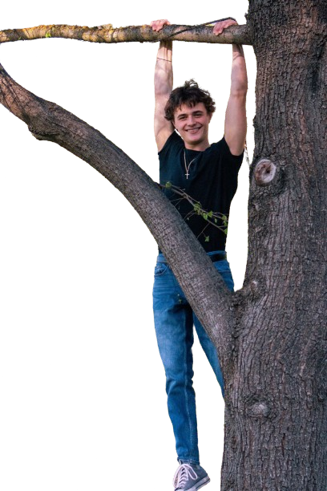

Ethan Jordan
Computer Science Transfer to SJSU | Software Engineering | Security & IT
Paid Technical Experience | CompTIA A+ Core 1 | Linux & Network Labs
BlogHighlights
Fast proof for software, cybersecurity, and IT roles.
SJSU CS transfer
Accepted as a Computer Science transfer from Foothill College to San Jose State University for Fall 2026.
Production software
Virtius gave me production-style experience with live scoring data, Next.js, TypeScript, GraphQL, and Playwright.
Automation
Built a Python/Selenium tool at AVAC that reduced repetitive enrollment steps and flagged cases that needed human review.
Linux
Used Kali, Arch, and Mint through live boots and full installs since freshman year of high school.
Networking
Pi-hole taught me DNS, DHCP, IPv4, IPv6, router limits, and how ISP gateways can break clean network plans.
Security + IT base
CompTIA A+ Core 1, Nmap, Metasploit labs, Raspberry Pi projects, and a habit of testing before changing systems.
About Me
I'm Ethan Jordan, a computer science student transferring from Foothill College to San Jose State University in Fall 2026.
I have paid technical experience and projects across web apps, automation, Linux, networking, and security-minded debugging.
I like work where the details matter: request flow, test coverage, performance, data handling, permissions, and how systems fail in real life.
My style is simple: understand the system, test before changing it, and explain hard topics clearly.

Resume
Summary
Computer science student transferring from Foothill College to San Jose State University in Fall 2026 after a competitive CS transfer path. Paid technical experience, CompTIA A+ Core 1, and projects across TypeScript, Python, test automation, Linux, networking, and security-minded debugging.
Skills
- Languages: Python, Java, TypeScript, JavaScript, C++
- Web: Next.js, React, Tailwind CSS, HTML, CSS
- Testing: Playwright, regression testing, visual checks
- Data & Automation: Pandas, SQLite, Selenium, CSV workflows
- Systems: Kali Linux, Arch Linux, Linux Mint, Raspberry Pi, DNS, DHCP, IPv4, IPv6, RTSP
- Security & IT: Network scanning, request flow, data handling, edge cases, router limits, safe configuration changes
- Tools: Git, GitHub, Nmap, Metasploit, VLC, yt-dlp, BeautifulSoup, Requests
- Support: Technical troubleshooting, customer communication, scheduling systems
Internships & Experience
Virtius
Software Engineering Intern / Project Engineer Paid, December 2025-Present
- Improved scores.virti.us, a live NCAA gymnastics meet viewer built with Next.js, React, TypeScript, Tailwind, and GraphQL.
- Worked on performance, scoring correctness, API data handling, client/server boundaries, and Playwright regression tests.
- Handled product work with a designer/project manager where changes had to survive real users, live data, and regression testing.
HeartBeam
Technical Intern Paid, April 2025-Present
- Gained internship experience in a health-tech environment where accuracy, documentation, and careful technical work matter.
- Built exposure to how software, hardware, documentation, and technical decisions fit inside a regulated company.
Jake Gipson Real Estate
Marketing & Web Intern Paid, 2022-2024
- Managed and created content across Instagram, Facebook, TikTok, YouTube, and LinkedIn.
- Used Buffer to schedule posts and keep social media content organized across platforms.
- Helped produce photo and video content for real estate marketing.
- Built and edited website pages using Elementor and Kubio.
- Learned client-facing communication, branding, content analytics, and fast problem-solving inside a real business.
Almaden Valley Athletic Club, San Jose, CA
Tennis Scheduler & Receptionist June 2024-Present
- Manage scheduling systems, phone/email requests, and conflicts between members, staff, and coaches.
- Built a Python/Selenium automation tool to reduce repetitive tennis enrollment work and flag edge cases for staff review.
CVS Pharmacy 1314, San Jose, CA
Retail Associate October 2022-July 2024
- Handled customers, register work, stocking, cleaning, and cross-department support while often being the only associate on the floor.
- Learned to prioritize quickly, communicate clearly, and solve problems without waiting for perfect conditions.
Education
San Jose State University
B.S. Computer Science Incoming Transfer, Fall 2026
Accepted transfer from Foothill College into a competitive Computer Science program in Silicon Valley.
Foothill College
Computer Science for Transfer July 2024-Present
Focused on programming, data structures, algorithms, discrete math, calculus, and honors coursework.
Relevant Coursework
- Advanced Data Structures in Java
- Advanced Python
- Data Structures and Algorithms
- Discrete Mathematics
- Honors Calculus
- Intermediate Python
- Object-Oriented Java
- App Design
- Computer Architecture
Certifications & Activities
- CompTIA A+ Core 1
- Computer Science Club
- VR Club
- National Honor Society
- Santa Clara County Parks Volunteer
- English and Spanish